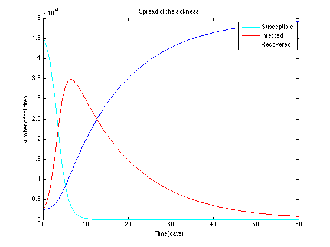

Sick Equations
global gam beta gam=1/14; beta=0.00002; %Initial conditions S0=50000-2500-2200; I0=2200; R0=2500; z0=[S0 I0 R0]; %Time constraint t0=0; tmax=60; [t,y]=ode45('sickeqns',[t0, tmax], z0); % Susceptible plot(t,y(:,1), 'c'); title('Spread of the sickness'); xlabel('Time(days)'); ylabel('Number of children'); hold all % Infected plot(t,y(:,2), 'r'); hold all % Recovered plot(t,y(:,3), 'b'); legend('Susceptible','Infected','Recovered');